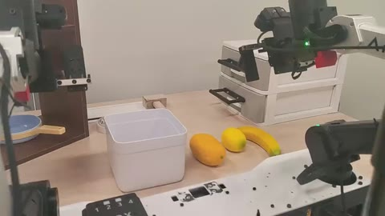
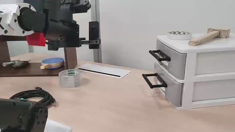
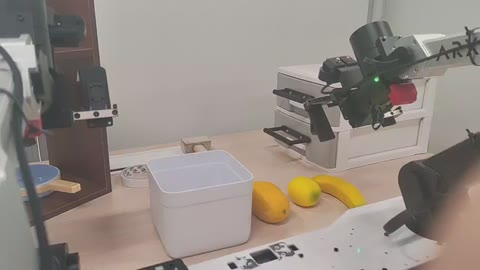
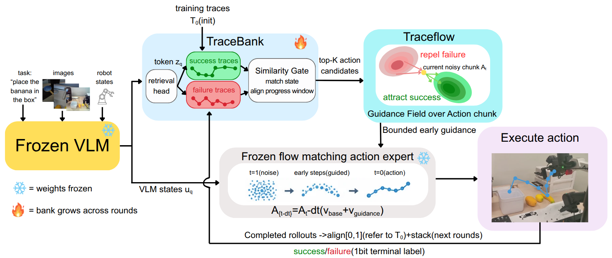
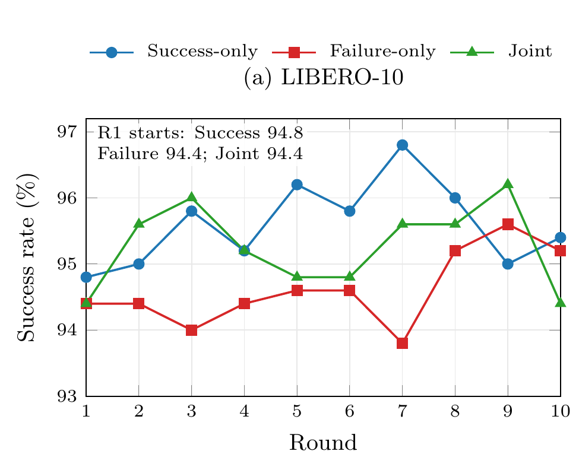
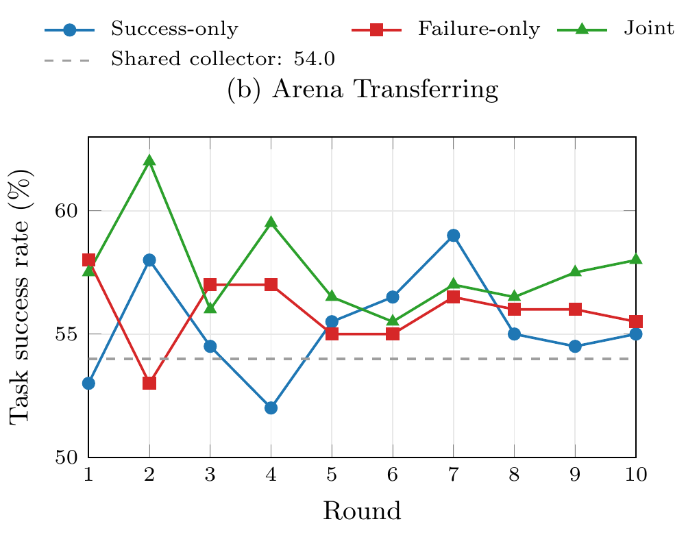

Store experience
Keep state anchors, action records, episode metadata, and a terminal outcome bit.
Experience-guided robot manipulation
Reuse what worked. Steer away from what did not.
A bounded action guidance field, with no deployment-time policy updates.
1 The University of Hong Kong2 Southern University of Science and Technology
* Corresponding author
Explore the paper, code, models, and real-world dataset.
01 / On the real robot
Three tasks. Two behaviors.
Selected rollout comparisons at 4× speed.



All clips play at 4× speed; loops are not time-synchronized. The TraceFlow drawer clip uses only source 00:00–01:17. On smaller screens, swipe horizontally to compare all three columns.
Selected qualitative demonstrations, not a success-rate estimate. Aggregate trial results are reported below.
The idea
A frozen robot policy does not automatically benefit from its previous successes and failures. TraceFlow gives that experience a route back into action generation.
A trace is a time-ordered state–action record with one terminal success/failure label. The TraceBank starts from task-training traces and can later admit the robot’s own completed rollouts. At each policy query, the system retrieves comparable moments and uses their action windows to guide the frozen flow-matching action expert.
02 / How it works
A retrieval path alongside the policy,
not a replacement for it.

Keep state anchors, action records, episode metadata, and a terminal outcome bit.
Match the current state and task progress to relevant success and failure action windows.
Build local action densities and bound their signed correction to the expert’s velocity.
Align completed deployment traces and admit them for subsequent rounds, without policy updates.
03 / Evidence
Measured on the real robot.
Not inferred from the example videos.
Ordered fruit packing · T2
On the same frozen base policy, ordered task success rises from 21/50 to 39/50 with TraceFlow, then to 47/50 after one stacking round.
| Task | Method | Ordered success ↑ | Wrong sequence ↓ | Subtask success ↑ |
|---|---|---|---|---|
| T1 · Tape + hammer2 subtasks | Baseline | 8/50 | 0/50 | 34/100 |
| TraceFlow | 16/50 | 0/50 | 52/100 | |
| T2 · Ordered fruits3 subtasks | Baseline | 21/50 | 20/50 | 123/150 |
| TraceFlow | 39/50 | 2/50 | 129/150 | |
| TraceFlow + TraceBank-Stack | 47/50 | 0/50 | 145/150 | |
| T3 · Tape + cable6 subtasks | Baseline | 0/10 | 8/10 | 8/60 |
| TraceFlow | 1/10 | 0/10 | 31/60 |
Ordered success requires all stages in sequence. Subtask success counts completed subtasks irrespective of order. T3 has only ten trials per setting; its result is descriptive, not a general reliability claim. The videos above are not labeled as the stacked setting.
Simulation evaluates LIBERO, LIBERO-Plus (Long), and RoboMemArena. Gains are strongest in the studied Sequence and Transferring settings; Counting and Occlusion remain unresolved. Stacking is not monotonically beneficial, and bank outcome counts do not establish a universal positive/negative retrieval-budget rule.
| Evaluation | Backbone | Base | TraceFlow | Δ (percentage points) |
|---|---|---|---|---|
| LIBERO four-suite | π₀.₅ | 96.85 | 98.30 | +1.45 |
| LIBERO-Plus (Long) | π₀.₅ | 79.83 | 81.10 | +1.27 |
| Arena Sequence + Transferring | π₀.₅ | 56.75 / 62.92 | 57.75 / 63.42 | +1.00 / +0.50 |
| Arena Sequence | PrediMem | 78.92 / 83.09 | 91.50 / 95.58 | +12.58 / +12.49 |
| Arena Transferring | PrediMem | 54.41 / 66.34 | 62.00 / 69.08 | +7.59 / +2.74 |
| Arena Counting | PrediMem | 26.61 / 56.12 | 25.49 / 53.50 | −1.12 / −2.62 |
| Arena Occlusion | PrediMem | 17.11 / 42.34 | 15.69 / 40.60 | −1.42 / −1.74 |
| Arena Full26 | PrediMem | 34.92 / 56.01 | 34.99 / 55.04 | +0.07 / −0.97 |
LIBERO reports SR (%); Arena reports TSR / CSR (%). Bold marks the better value. Each row compares the same checkpoint and evaluator. These are selected settings, not one shared configuration: LIBERO averages suite-wise selections (98.00% with one shared configuration); Sequence uses Upper–Direct with K₊ = 50; Transferring uses Joint round 2 with K₊/K₋ = 8/8. Full26 is a separate suite-conditioned aggregate, not the average of the selected rows. LIBERO-Plus (Long): 2,519 paired trials, p = 0.0733.
Experience accumulation
Only the admission rule changes: Success-only adds new successes, Failure-only adds new failures, and Joint adds both. Previously stored traces remain retrievable; policy weights stay frozen. R denotes the collection round.

Success-only reaches 96.8% SR at R7, up from 94.8% at R1. Failure-only and Joint peak at R9 (95.6% and 96.2%), then finish at 95.2% and 94.4%. More experience does not guarantee a higher success rate.

Joint peaks early at R2 with 62.0% TSR, compared with the 54.0% shared collector (dashed line). Success-only peaks at R7 (59.0%); Failure-only at R1 (58.0%). Combining outcomes gives the highest observed peak, not a universal stopping rule.
Observed single-lineage curves from the paper, not uncertainty estimates or predictions of an optimal future round. The two benchmarks have different collection budgets and should not be compared as equal-cost updates.